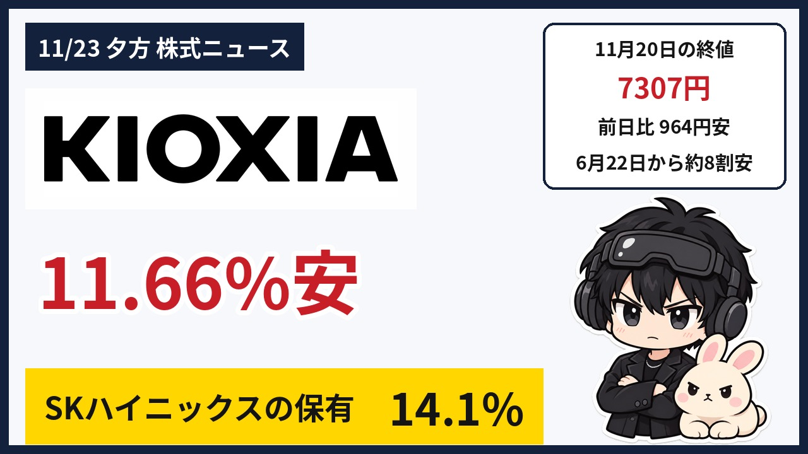
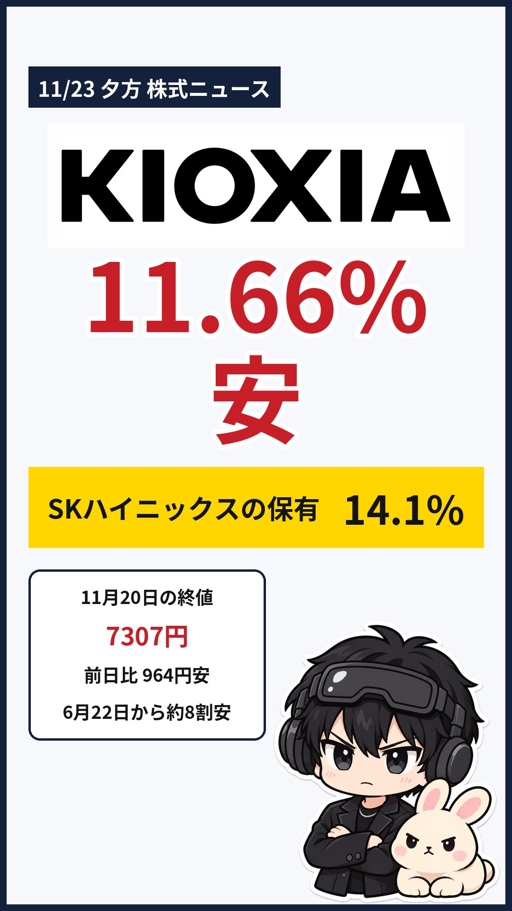

横：【11月23日の株式ニュース】キオクシア11.66%安・SKハイニックスが14.1%を持つことに ショート：キオクシア11.66%安・SKハイニックスが14.1%を持つことに｜11月23日 #Shorts
▼毎日の相場分析と、週1回の来週の展望は note で！ https://note.com/colne ▼いま Colne が気にしている相場は X で！ https://x.com/colne_x 2026年11月23日（勤労感謝の日・東証は休み）の株式ニュースです。韓国のSKハイニックスは11月20日、キオクシアに関わる転換社債を株に変えると発表し、キオクシアの株の約14.1%を間接的に持つことになります。同じ日のキオクシアの株価は7307円で、前の日より11.66%安くなりました。楽天証券の集団訴訟の参加の登録、JTのロシアの子会社をめぐる約1兆3770億円の損失と配当の減額、アメリカ・中国・ロシアの首脳会談、ナスダック総合指数が5.28%下がったアメリカの金曜日の取引、今夜と今週の予定もお伝えします。 目次 0:00 オープニング 0:19 キオクシア SKハイニックスが14.1%を持つことに 2:05 楽天証券 2:27 JT ロシアの子会社と配当 3:32 世界のニュース アメリカ・中国・ロシアの首脳会談 4:20 アメリカの金曜日の取引 6:26 今夜と今週の予定 8:26 Colne からのご案内 Colne 公式 ・X：https://x.com/colne_x ・note：https://note.com/colne ・Instagram：@colne_i ・ホームページ：https://www.colne.jp/ ※この動画は、特定の銘柄の売り買いをすすめるものではありません。 ※数値は、2026年11月19日〜22日に出た情報（各社の発表・報道各社・ニューヨーク証券取引所）にもとづきます。 #株式ニュース #キオクシア #日本株 #Colne
noteとXのリンクは、Colne のチャンネルのプロフィールにあります。 11月23日の株式ニュースの全編は、上の動画リンクから。 #キオクシア #株式ニュース #Shorts